Settings¶
Manage Users¶
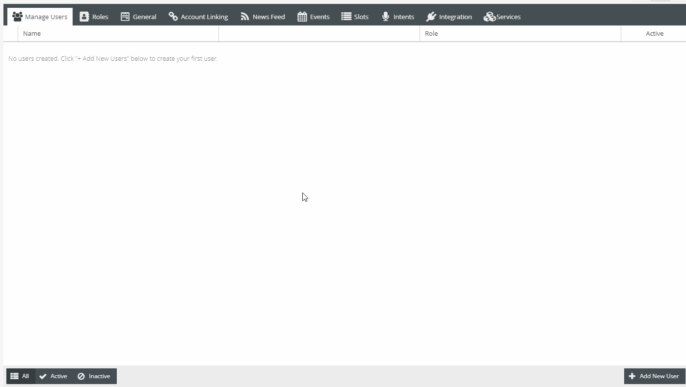Ability to create multiple users to help manage content for particular skill.
Roles¶
Example of creating role specific for Events and Event management
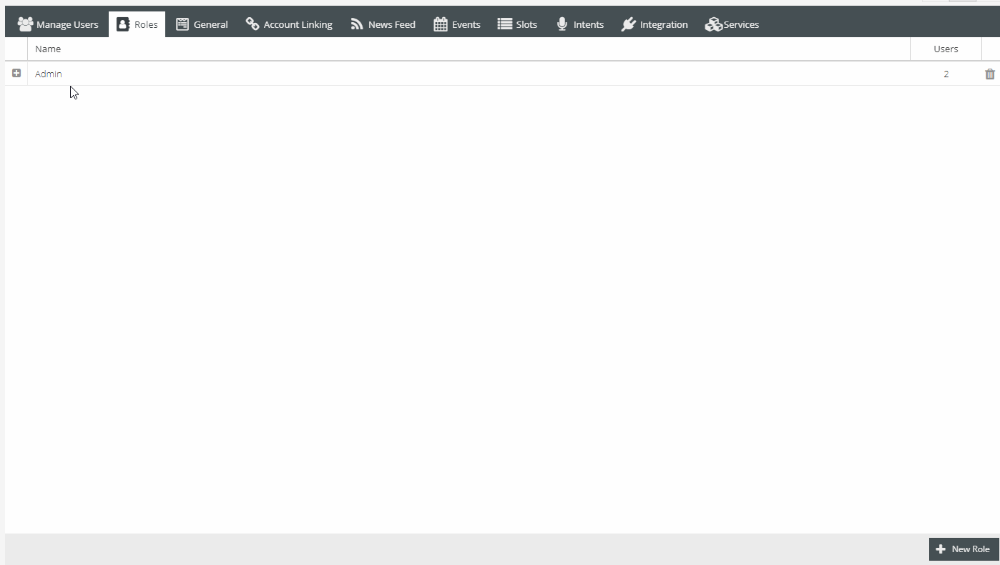Ability to create context driven roles for users. Users with specific roles would only be able to view and work within the roles they have been assigned.
General Tab¶
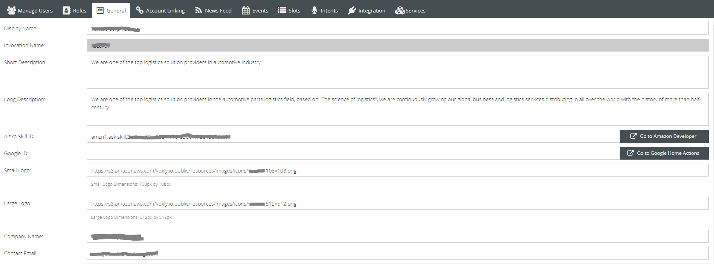- Invocation Name
- The invocation name is how the skill will be invoked by users. Also known as a wake word. It is recommended to make the invocation name two words.
- Short and Long Description
- Required to submit skill. Description shown to users within Alexa and Google app store.
- Alexa Skill and Google ID
- This ID is unique for each tenants’ skill. This is how the server will register a specific skill.
- Enter the skill ID associated with the Google or Amazon Alexa skill that was created.
- Small and Large Logo
- Logos for app stores.
- Company Name & Email
- Associated company for skill
For instructions on setting up the Alexa skill account please see blank section
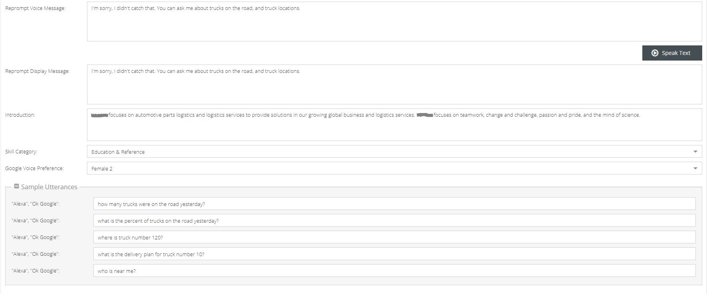- Reprompt Message
- This message will be relayed to a user when their questions was not understood. Meaning, Alexa understood she was spoken to but could not make out what was asked.
- Speak Text Button
- This button allows a manager to test what the voice message will sound like.
Note: Voice is what Alexa will speak. Display is what will be shown on screen if device has screen. ADD LINK TO WRITING VOICE
- Introduction
- App store introduction to skill
- Skill Category
- Google Voice Preference
- Sample Utterances
- Possible phrases that skill can be asked

- Privacy & Compliance
- Allows Purchases
- Uses personal information
- Target audience
- Export Compliance
- Advertising
- Terms of Service URL
- Privacy URL
- Testing Instructions
- Explain how to use skill
Account Linking¶
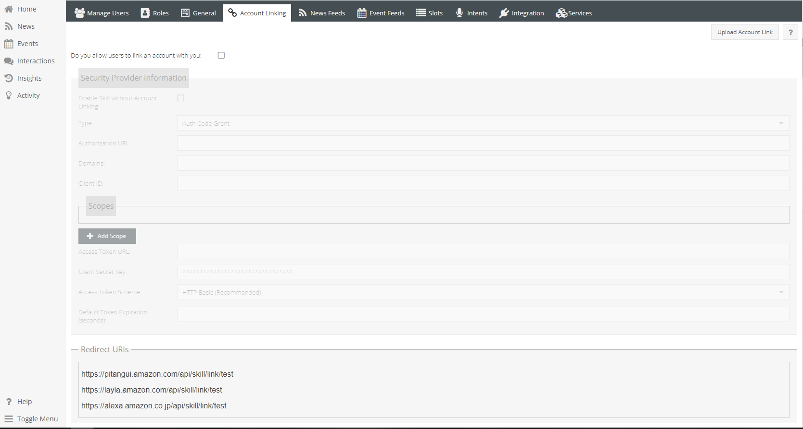 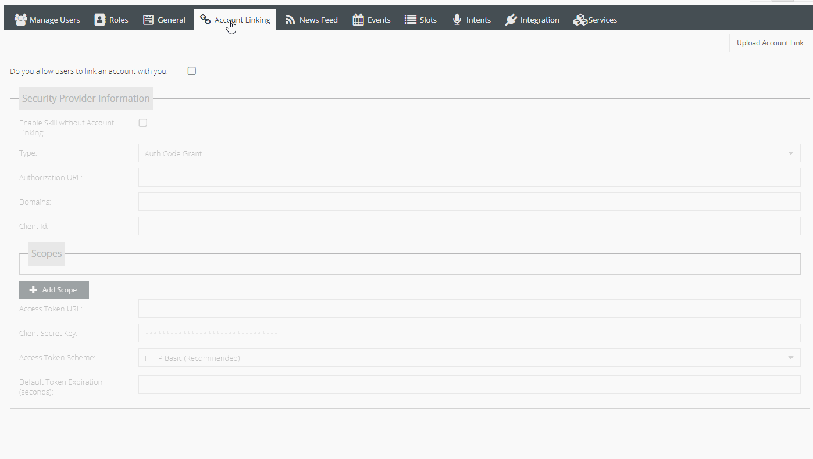Account Linking is for linking to third party connectors such as spotify.
Enable by checking account link box at top
- Security Provider information
Enable skill without linking - Allows users to use skill if not account was linked
Type
- Auth Code Grant - Recommended
- Implicit Grant
Authorization URL - the url to authorize account linking, found within Third Party Developer account
Domains
Client ID
- Scopes
- List of how skill with use accounts with third party service
- Auth Code Grant Type
- Access Token URL - Third Party Access Token for skill to use third party service
- Client Secret Key - Private Key found in Third Party Developer account
- Access Token Scheme
- Default Token Expiration - Defaults to 3500 milliseconds
If manager is responsible for third party account, within Amazon Developer Alexa Skill > Build > Account Link will find the redirect URIs that are needed in the Third Party Developer Account
Or at the very bottom of the Account Linking in the Manager, there will be three URLs, these are to be added to your Spotify account. It tells spotify where to redirect after the user allows the skill to use their information.
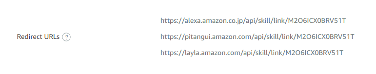 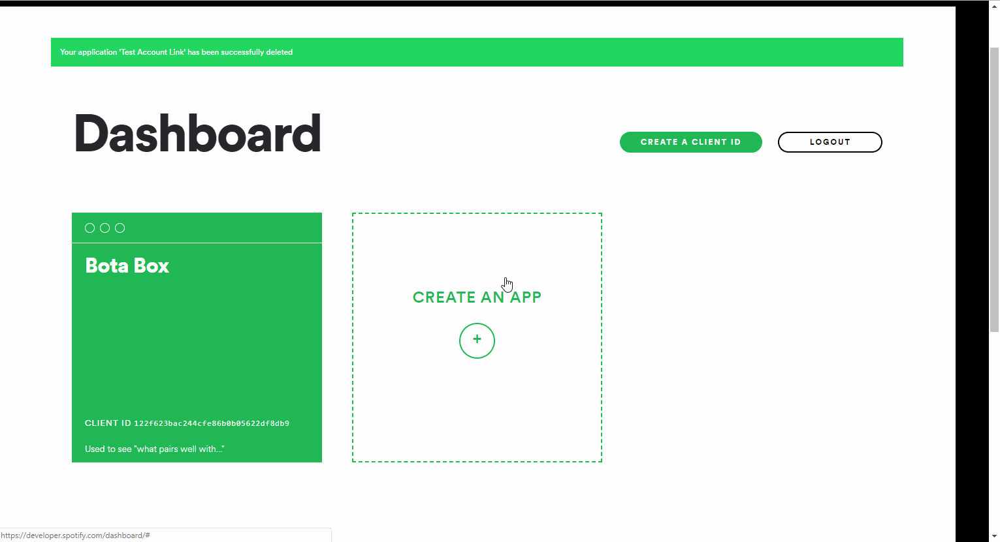Once all information is filled out, Upload Account Link to the Amazon Developer Skill
News Feeds¶
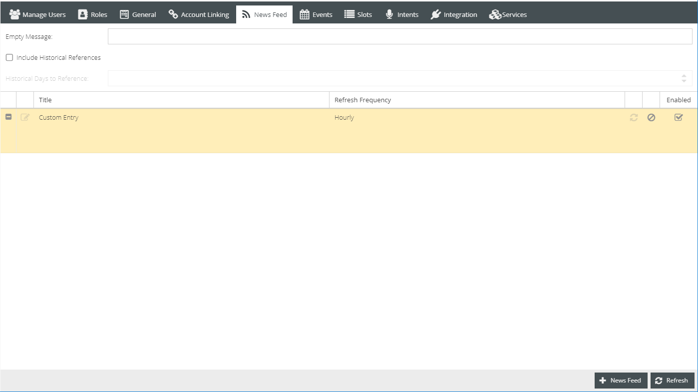Refresh - Refresh grid
Empty Message - Text for if no news items exist
Include Historical References - Allows Alexa to search further than the day content was requested, upon finding no new content for that initial range
Historical Days to References - Number of days to search back from initial date
Grid
- Edit Feed
- Title
- Refresh Frequency
- Sync - Sync most updated data
- Clear Data - Clear feed data
- Enable Feed - Enable/Disable Feed until feed is ready
- + News Feed
Title - Feed title
URL - Feed URL
Refresh Rate - Rate at which feed will be harvested
- Hourly
- Daily
Remove Text - If RSS cuts off a story, this allows for a custom message to direct users further
News Category - Additional category appended to all feed items
Description Template - Allows all feed items to use a specific template for response:
Location: {{address}} {{description}}
Events Feeds¶
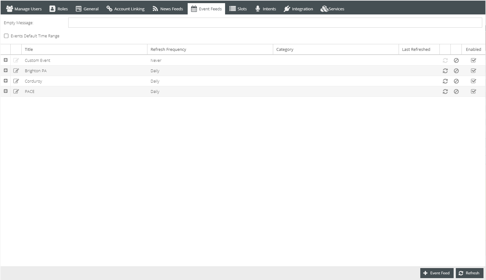 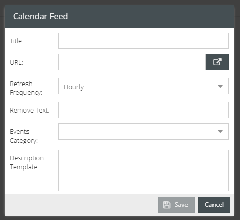See News Feeds
Slots¶
The primary function of this page is to create values to further be used within the management system. The drop down contains a list of predetermined slot categories, values to be added will correspond to these categories. This section can best be thought of as a word bank, adding words (values) that relate to each category. Please see below for further examples.
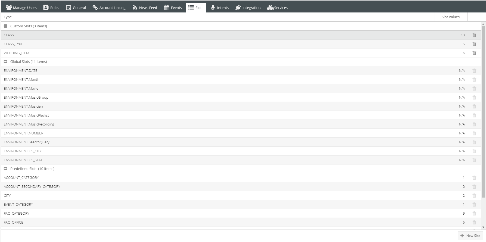Example of values created within the Verb slot
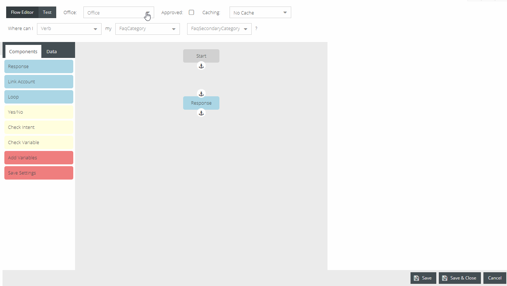Values created within this page will give content to choose from slot categories when creating/editing FAQs and Events
See Slots Settings Guides here: Settings Guides
Intents¶
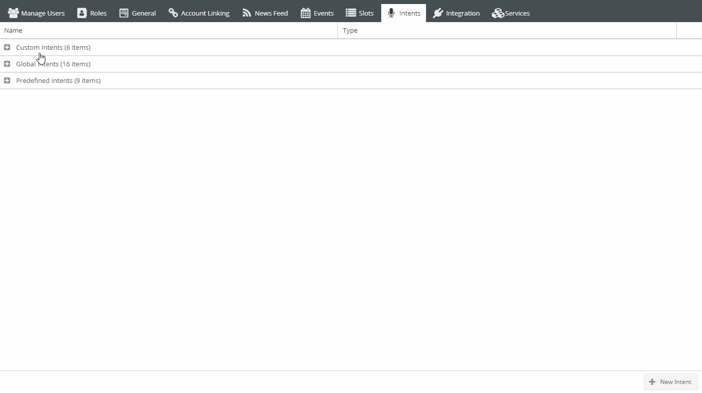Intents allows the manager to create new intents to answer specific user questions to a particular skill. Intents are the mad-lib, or fill-in-the-blank templates that assist in answering user’s needs. A skill made for locations may need a new intent.
Examples:
`Maps`, and maybe `Directions`
`Maps` may answer questions about where things are located
`Directions` still deals with locations but instead answers questions about how to get to those locations
Integration¶
- If their are open source connectors, they can be added under Integration.
- Click add
- Select account type
- Input information for data to be queried
Specific to helping pull events and interaction information